GoLang系统学习
简介
-
Google开源
-
编译型语言（类c语言）
-
天生支持并发
-
1.11版本之前需要配置GOPATH环境变量（src源码，pkg编译后的归档文件、库文件 ，bin二进制可执行文件），1.12开始支持gomod。
-
编译：
- 项目目录下
go build生成可执行文件。 go build -o __name__可以指定生成可执行文件的名字。go run编译到执行。go install编译成可执行文件并拷贝到bin目录。
- 项目目录下
-
Go支持跨平台交叉编译。
CGO_ENABLED=0（禁用CGO）GOOS=windows（目标平台linux，windows，darwin）GOARCH=amd64（目标平台处理器架构）
-
GoLang中25个关键字
break default func interface select case defer go map struct chan else goto package switch const fallthrough if range type continue for import return var -
Go语言源码文件后缀名
.go，文件第一行：package关键字声明包名。package main不同于其它 library package，它定义了一个可执行程序。其中的main()函数即是可执行文件的入口函数。 -
一条语句占一行无需分号(;)，多条语句一行用分号分隔。
-
注释：单行注释(
//)，多行注释(/* */) -
GoLang变量推荐驼峰式命名法。
studentName -
Go语言函数外部的语句必须以关键字开头。
-
Go语言中如果标识符、结构体字段首字母大写，代表公有，对外部包可见；如果首字母小写，代表私有，对外部包不可见。
Go 基础语法
变量和常量
-
Golang中的变量必须先声明再使用。非全局变量声明后必须使用，否则编译无法通过。
-
变量声明及初始化
- 声明格式：
var 变量名 变量类型 = 表达式——同一作用域不能重复声明同名变量 - 批量声明：
- 声明格式：
var (
a string
b int
c bool
d float32
)
3. 变量声明时初始化为其类型默认值。（整型和浮点型变量的默认值为0； 字符串变量的默认值为空字符串；布尔型变量默认为false；切片、函数、指针变量的默认为nil。）
4. 类型推导：有时候我们会将变量的类型省略，这个时候编译器会根据等号右边的值来推导变量的类型完成初始化。
5. 一行语句可初始化多个变量。( var name, age = "godyu", 20) 指定变量类型时，一行的变量必须是同类型。( var a, b, c, d int = 10, 20, 30, 40)
6. 短变量声明：在函数内部，可以使用更简略的( := )方式声明并初始化变量。( a := 10)——不能用在函数外部
7. 匿名变量（哑元变量）：在使用多重赋值时，如果想要忽略某个值，可以使用匿名变量（anonymous variable）。 匿名变量用一个下划线( _)表示。匿名变量不占用命名空间，不会分配内存，所以匿名变量之间不存在重复声明。
- 常量：相对于变量，常量是恒定不变的值，多用于定义程序运行期间不会改变的那些值。
- 常量定义后不能修改。
const关键字用于常量声明，可批量声明，和变量声明及初始化类似。const同时声明多个常量时，如果省略了值则表示和上面一行的值相同。iota是GoLang的常量计数器，只能在常量的表达式中使用。iota在const关键字出现时将被重置为 0 。const中每新增一行常量声明将使iota计数一次(iota可理解为const语句块中的行索引)。 使用iota能简化定义，在定义枚举时很有用。- 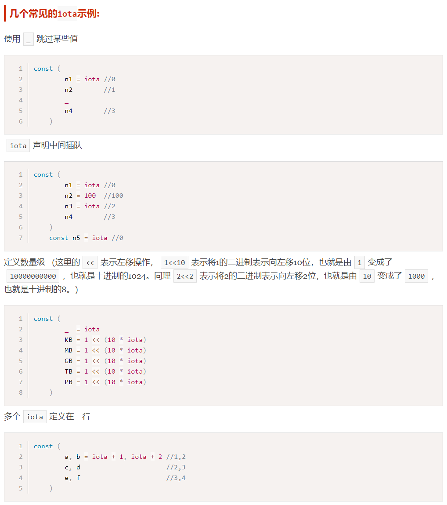
基本数据类型
-
Go语言中有丰富的数据类型，除了基本的整型、浮点型、布尔型、字符串外，还有数组、切片、结构体、函数、map、通道（channel）等。
-
fmt包：格式化输出占位符
fmt.Printf
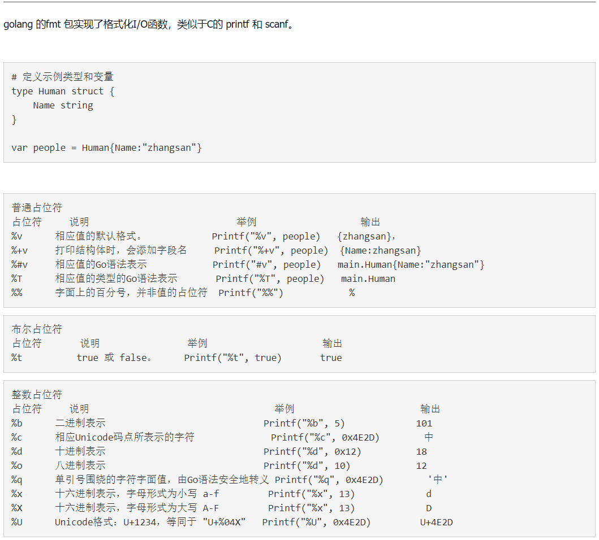
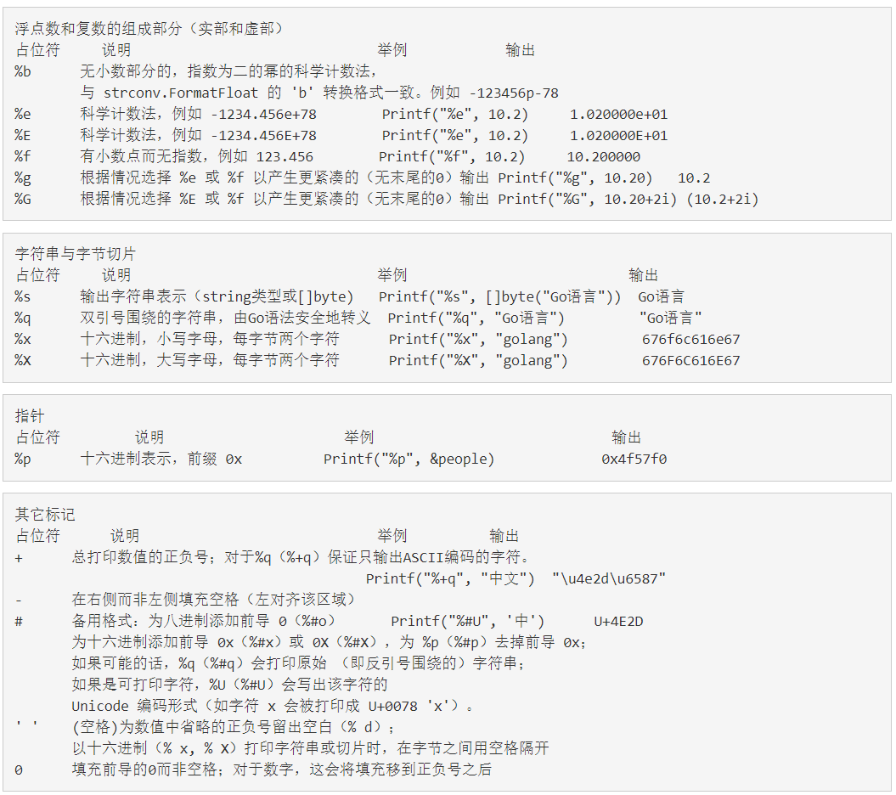 -
整型
- 有符号整型：int8，int16，int32，int64，int（32位操作系统上就是int32，64位操作系统上就是int64）
- 无符号整型：uint8，uint16，uint32，uint64，uint（32位操作系统上就是uint32，64位操作系统上就是uint64）
- uintptr：无符号整型，用于存放一个指针。
- 格式化输出：
fmt.Printf，%d（十进制），%b（二进制，无法直接定义），%o（八进制，0开头），%x（十六进制，0x开头），%T（变量数据类型）。
-
浮点型
- Go语言支持两种浮点型数：float32和float64（无float，默认推导float64）。
math包中有相关常量定义：math.MaxFloat32，math.MaxFloat64
-
复数：complex64和complex128。复数有实部和虚部，complex64的实部和虚部为32位，complex128的实部和虚部为64位。
-
布尔型
- Go语言中以
bool类型进行声明布尔型数据，布尔型数据只有true（真）和false（假）两个值。 - 布尔类型变量的默认值为
false。 - Go 语言中不允许将整型强制转换为布尔型。
- 布尔型无法参与数值运算，也无法与其他类型进行转换。
- Go语言中以
-
字符串
- Go语言中的字符串以原生数据类型出现。内部实现使用
UTF-8编码。 字符串的值为双引号("")中的内容。（可解析的字符串字面量——支持转义，不能用来引用多行） - 转义字符： \
- 多行字符串：Go语言中要定义一个多行字符串时，就必须使用反引号(``)字符。反引号间换行将被作为字符串中的换行，但是所有的转义字符均无效，文本将会原样输出。（原生的字符串字面量 ）
- 字符串常用操作
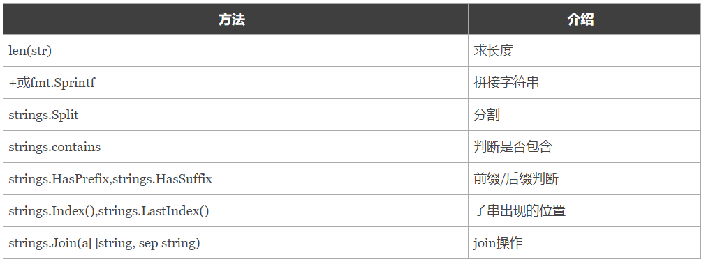 - byte类型和rune类型
- 组成每个字符串的单个元素叫做字符。 字符的值由单引号('')包裹。
- Go 语言的字符有以下两种：
- uint8类型，也叫 byte 型，代表了ASCII码的一个字符。
- uint32类型，也叫 rune 型，代表一个UTF-8字符。一个rune字符由一个或多个byte组成。
- 定义一个字符默认是uint32(rune)类型。
- UTF-8编码下一个中文汉字由3~4个byte组成。所以我们不能简单的按照字节去遍历一个包含中文的字符串。
- 字符串底层是一个byte数组，所以可以和
[]byte类型相互转换。字符串是由byte字节组成，所以字符串的长度是byte字节的长度。 - 字符串本身是不能修改的，要修改字符串，需要先将其转换成
[]rune或[]byte，完成后再转换为string。无论哪种转换，都会重新分配内存，并复制字节数组。
- Go语言中的字符串以原生数据类型出现。内部实现使用
-
类型转换
- Go语言中只有强制类型转换，没有隐式类型转换。该语法只能在两个类型之间支持相互转换的时候使用。
- 基本语法：
T(表达式)——T表示要转换的类型。表达式包括变量、复杂算子和函数返回值等。
流程控制
-
Go语言中最常用的流程控制有
if和for，而switch和goto主要是为了简化代码、降低重复代码而生的结构，属于扩展类的流程控制。 -
if条件判断结构
- Go语言规定与
if匹配的左括号{必须与if和 condition 放在同一行，{放在其他位置会触发编译错误。 同理，与else匹配的{也必须与else写在同一行，else也必须与上一个if或else if右边的大括号在同一行。；condition 为多表达式逻辑运算表达式时，换行时逻辑运算符在非空行末尾。 if后可以声明变量在if结构内使用，作用域为if结构，使用结束后及时销毁，减少内存占用。(if vaule := 10 ; condition {...})
- Go语言规定与
if condition1 {
branch1
} else if condition2 {
branch2
} else{
branch3
}
-
for循环结构
- Go 语言中的所有循环类型均可以使用
for关键字来完成。 - 基本格式 ：
for 初始语句 ; 条件表达式 ; 结束语句{ 循环体语句 }（初始语句声明的变量作用域在for循环结构内部） for循环的初始语句可以被忽略，但是初始语句后的分号必须要写；for循环的初始语句和结束语句都可以省略，功能类似其他语言的while（此时分号也省略）- 无限循环：
for {...} - for循环可以通过
break、goto、return、panic语句强制退出循环。 - for range键值循环：Go语言中可以使用for range遍历数组、切片、字符串、map 及通道（channel）。(
for i ,v := range s {...})- 数组、切片、字符串返回索引和值。
- map返回键和值。
- 通道（channel）只返回通道内的值。
- kv陷阱：v是每个元素的值拷贝，重复用同一块内存地址；修改、储存元素的值需要使用
m[k]索引，不要使用&v进行运算。
- Go 语言中的所有循环类型均可以使用
-
switch case 结构
- 使用
switch case语句可方便地对大量的值进行条件判断。 - Go语言规定每个 switch 只能有一个
default分支。 - switch关键字后可以使用初始语句。（
switch flag := 1 ; flag { ... }）——变量作用域在 switch 内部 - 一个分支可以有多个值，多个 case 值中间使用英文逗号分隔。
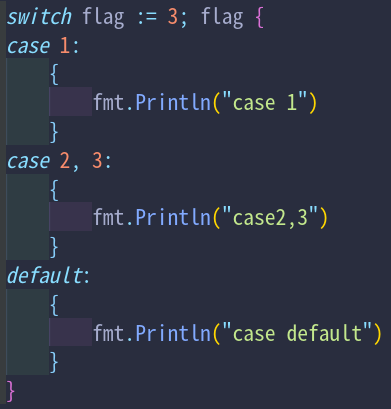 - 分支还可以使用表达式，这时候 switch 语句后面不需要再跟判断变量。
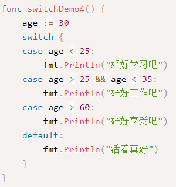 for-switch陷阱：switch 中 break 作用于当前语句块，不对外层 for 循环起作用，循环中其他剩余语句仍然执行；continue 只能作用于外层 for 循环，无法单独在 switch 中使用，循环中其他剩余语句不会执行，直接进入下一次循环；return 当前函数直接返回，for-switch及后序代码都不执行。fallthrough语法可以执行满足条件的 case 的下一个 case ，是为了兼容C语言中的 case 设计的。（一般不用）
- 使用
-
goto跳转语句：
goto语句通过标签(LABELX:)进行代码间的无条件跳转。goto语句可以在快速跳出循环、避免重复退出上有一定的帮助。（少用，可读性差） -
break跳出语句，continue结束当前循环语句- break语句用于跳出
for、switch和select的代码块。 - break语句还可以在语句后面添加标签(
LABELX:)，表示退出某个标签对应的代码块，标签要求必须定义在对应的for、switch和 select的代码块上。 - continue语句可以结束当前循环，开始下一次的循环迭代过程，仅限在 for 循环内使用。在 continue 语句后添加标签时，表示开始标签对应的循环。
- break语句用于跳出
运算符
-
算数运算符：加(+)、减(-)、乘(*)、除(/)、求余(%)。
a++(自增)和b--(自减)在Go语言中是单独的语句，并不是运算符，不能放在等号(=)右边赋值。
-
关系运算符：返回值为bool值。( ==、!=、>、>=、<、<= )——Go语言是强类型，相同类型变量才能比较。
-
逻辑运算符：返回值为bool值。( &&、||、! )
-
位运算符：&(与)、|(或)、^(异或)、<<(左移)、>>(右移)——位运算符对数值在内存中的二进制位进行操作。
-
赋值运算符：=、+=、-=、*=、/=、%=、<<=、>>=、&=、|=、^= (相应操作后赋值) ——用来给变量赋值。
复合数据类型
-
Array(数组)
- 声明数组
var arrayname [n]T - 数组的长度(容量)必须是常量，并且长度是数组类型的一部分。一旦定义，长度不能变。（
[5]int和[10]int是不同的类型，无法比较。） - 数组初始化
- 如果不初始化，元素赋值为默认值。
- 初始化列表
var numArray = [3]int{1, 2}。一般情况下我们可以让编译器根据初始值的个数自行推断数组的长度var numArray = [...]int{1, 2}。还可以使用指定索引值的方式来初始化数组a := [...]int{1: 1, 3: 5}。
- 数组可以通过下标(索引)进行访问，下标是从0开始，最后一个元素下标是：len-1，访问越界（下标在合法范围之外），则触发访问越界，会panic。
- 数组遍历：1. 根据索引遍历
for i := 0; i < len(a); i++2. for range遍历for index, value := range a - 多维数组：多维数组只有第一层可以使用
[...]来让编译器推导数组长度。 - 数组是值类型，赋值和传参会复制整个数组。因此改变副本的值，不会改变本身的值。
[n]*T表示指针数组，*[n]T表示数组指针 。
- 声明数组
-
Slice(切片)
- 切片(Slice)是一个拥有相同类型元素的可变长度的序列。它是基于数组类型做的一层封装。非常灵活，支持自动扩容。切片是一个引用类型，它的内部结构包含地址、长度和容量。切片一般用于快速地操作一块数据集合。共享底层数组的多个切片，对一个切片的修改会影响其他切片的内容。
- 声明切片
var name []T - 切片初始化，与数组初始化类似，区别是使用空方括号( [] )。切片两种遍历方式同数组遍历。
- 切片拥有自己的长度和容量，我们可以通过使用内置的
len()函数求长度（high-low），使用内置的cap()函数求切片的容量（max-low）。 - 数组/切片再切割得到切片
s := a[low : high : max]——左闭右开区间。len()：high-low；cap()：max-low。max、high不能大于被切割的底层数组/切片的容量 cap()。——底层数组和共享切片地址相同。 - 可以省略切片表达式中的任何索引。省略了low则默认为0；省略了high则默认为切片的
len()；省略了max则默认为被切割的底层数组/切片的容量 cap()。 - 切片的本质：切片的本质就是对底层数组的封装、片段描述，它包含了三个信息：底层数组的指针、切片的长度（len）和切片的容量（cap），但是切片本身并不是真正的指针类型。——数据储存在一块连续的内存中（底层数组）。
- 切片是引用类型，切片之间是不能比较的，我们不能使用 == 操作符来判断两个切片是否含有全部相等元素。 切片唯一合法的比较操作是和 nil 比较。 一个 nil 值的切片并没有底层数组，一个 nil 值的切片的长度和容量都是0。但是我们不能说一个长度和容量都是0的切片一定是 nil。判断切片是否为空，请始终使用
len(s) == 0来判断，而不应该使用s == nil来判断。 make()函数构造切片、动态创建一个切片：a := make( []T, size, cap )——一定发生了内存分配操作。append()方法为切片增加元素- Go语言的内建函数
append()可以为切片动态添加元素。 可以一次添加一个元素，可以添加多个元素，也可以添加另一个切片中的元素（后面加 … ）。(s = append(s, 2, 3, 4) s = append(s, s2...))(
…)其实是Go的一种语法糖。它的第一个用法主要是用于函数有多个不定参数的情况，可以接受多个不确定数量的参数。第二个用法是slice可以被打散进行传递。 - 调用
append()一般用原切片变量接收返回值，且返回值必须有变量接收。 - 通过
var声明的 nil切片 可以被append()函数直接使用，无需初始化。 - append() 陷阱：每个切片会指向一个底层数组，这个数组的容量够用就添加新增元素。当底层数组不能容纳新增的元素时，切片就会自动按照一定的策略进行“扩容”，此时该切片指向的底层数组就会更换。——对原切片/底层数组赋值操作存在陷阱，新旧底层数组在内存地址不同。
- append() 扩容策略（随Go语言不断更新优化）
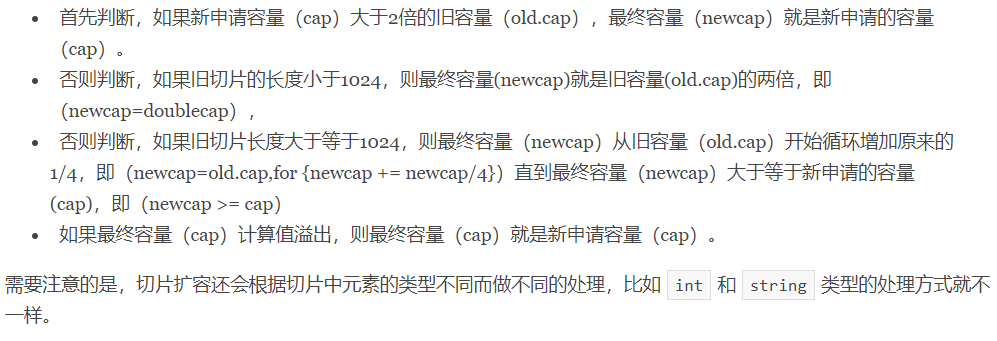
- Go语言的内建函数
copy()方法复制切片：Go语言内建的copy()函数可以迅速地将一个切片的数据复制到另外一个切片空间中，内存地址不同。(copy( destSlice, srcSlice )) ——目标切片需要提前开辟足够内存，长度够用。- 删除切片元素：Go语言中并没有删除切片元素的专用方法，我们可以巧妙使用
append()方法来删除元素。要从切片 a 中删除索引为 index 的元素，操作方法是：a = append( a[:index], a[index+1:]... )——不会改变 a 地址（元素减少不需扩容）。
指针(Pointer)
-
区别于 C/C++ 中的指针，Go语言中的指针不能进行偏移和运算，是安全指针。只有两种运算：取地址（&）和 根据地址取值（*）。
-
指针类型：Go语言中的值类型（int、float、bool、string、array、struct）都有对应的指针类型，*int、*string等。
-
指针变量声明未初始化时为 nil ，需要 new() 分配内存或指向地址后才能使用。
-
new()和make()区别- make()和new()都是用来动态分配内存的。
- new() 用于基本数据类型的内存分配，并且内存对应的值为类型零值，返回的是指向类型的指针。
- make() 也是用于内存分配的，区别于new()，它只用于slice、map以及chan的内存创建，而且它返回的类型就是这三个类型本身，而不是他们的指针类型，因为这三种类型就是引用类型，所以就没有必要返回他们的指针了。
map
-
Go语言中提供的映射关系容器为
map，其内部使用散列表（hash）实现。map 是一种无序的基于 key-value 的数据结构，Go语言中的 map 是引用类型，必须初始化才能使用。 -
map类型的变量默认初始值为 nil，需要使用
make()函数来分配内存。var m1 map[KeyType]ValueType
m1 = make( map[KeyType]ValueType, [cap] )
//估算好map的容量，尽量避免在程序运行过程中动态扩容。 -
判断键值是否存在：
value, ok := map[key]——如果 key 存在 ok 为 true , v 为对应的值；不存在 ok 为 false , v 为值类型的零值。 -
map 的遍历：使用
for range遍历map。（for k, v := range scoreMap——单返回值默认返回key，只要vaule需用匿名变量）- 遍历map时的元素顺序与添加键值对的顺序无关。（无序）
-
delete()内建函数删除 map 键值对：delete( map, key )——无返回值，如果删除的 key 不存在，则不做任何操作。 -
若想有序遍历 map ，取出 map 中的所有 key 存入切片 keys ，对 keys 排序后利用有序 keys 对 map 进行遍历。
-
注意 vaule 为切片/数组类型的 map ；key 为数组类型（无切片类型）的 map ；元素为 map 类型的切片。——各切片、map 使用前需分别分配内存。
函数(func)
-
Go语言中定义函数使用
func关键字。禁止在一个命名函数内再声明另一个命名函数。- 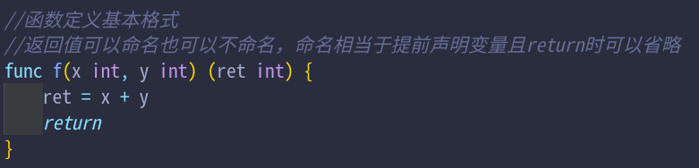
- 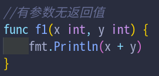
- 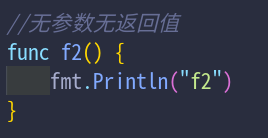
- 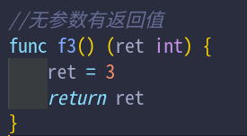
- 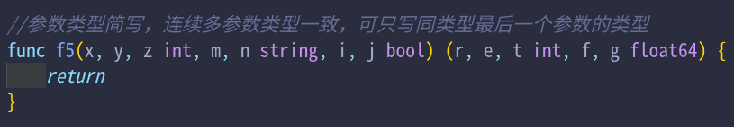
- 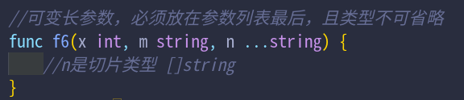
-
defer语句：Go语言中的defer语句会将其后面跟随的语句进行延迟处理。在 defer 归属的函数即将返回时，将延迟处理的语句按 defer 定义的逆序执行。先被 defer 的语句最后被执行，最后被 defe r的语句，最先被执行。defer语句能非常方便的处理资源释放问题。比如：资源清理、文件关闭、解锁及记录时间等。- 在Go语言的函数中
return语句在底层并不是原子操作，它分为给返回值赋值和RET指令两步。而 defer 语句执行的时机就在返回值赋值操作后，RET指令执行前。 - defer 注册要延迟执行的函数时该函数所有的参数都需要确定其值，只延迟最外层的函数调用，参数压栈正常进行。
-
变量作用域
- 全局变量：全局变量是定义在函数外部的变量，它在程序整个运行周期内都有效。 在函数中可以访问到全局变量。
- 局部变量
- 函数内作用域：函数内定义的变量无法在该函数外使用，如果局部变量和全局变量重名，优先访问局部变量。
- 语句块作用域：语句块内定义的变量，只在语句块内生效。
-
函数类型与函数类型变量
- 函数也是一种类型，函数类型可以作为函数参数，也可以作为函数返回值。——高阶函数（参数/返回值为函数类型）
- 参数和返回值的结构也是函数类型的一部分。
type关键字自定义函数类型：type myfunc func(int, int) int——自定义了一个 myfunc 类型，一种函数类型，有特定的参数列表和返回值。- 定义好的函数类型可以在声明函数类型变量和函数类型作为函数参数或返回值时使用。
-
匿名函数
- Go语言函数内部不能定义基本函数，只能定义匿名函数。
- 匿名函数就是没有函数名的函数。（
func (参数) (返回值) {}） - 将匿名函数保存到变量：
ff := func(...)(...){...} - 自执行匿名函数：定义完成后使用 () 立即调用。
- 匿名函数多用于实现回调函数和闭包。
-
闭包
- 闭包指的是一个函数和与其相关的引用环境组合而成的实体。有权访问另一个函数作用域中变量的函数
- 闭包的实现：
- 闭包通常是通过嵌套的匿名函数的形式实现的。
- 匿名函数内部引用了外部函数的参数或变量。
- 被引用的参数和变量的生命周期和外部调用者的生命周期相同。
- 加强封装性，可以达到对变量的保护作用。
- 变量作用域特点
- 全局变量：常驻内存、污染全局
- 局部变量：不常驻内存、不污染全局
- 闭包：可以让一个变量常驻内存、不污染全局
- 闭包作用域返回的局部变量资源不会立刻销毁回收，可能占用更多内存。
- 函数类型作为其他函数参数时，可用闭包解决函数类型不匹配问题，返回一个匹配的函数类型。
-
panic()和recover()- Go语言中目前（Go1.15）是没有异常机制，但是使用
panic/recover模式来处理错误。 panic()可以在任何地方引发，导致程序崩溃（强行return）；panic()后可以通过recover()将程序恢复回来并收集当前错误，继续往后执行，但recover()只有在defer调用的函数中有效。defer一定要在可能引发panic的语句之前定义。
- Go语言中目前（Go1.15）是没有异常机制，但是使用
结构体(struct)
-
Go语言中没有“类”的概念，也不支持“类”的继承等面向对象的概念。结构体是由一系列具有相同类型或不同类型的数据构成的数据集合，结构体本身是值类型。Go语言中通过结构体的内嵌再配合接口比面向对象具有更高的扩展性和灵活性。
-
自定义类型和类型别名（
type关键字）- 自定义类型：
type 自定义类型名 类型- 自定义类型在编译后仍然是我们定义的类型。
- 除操作集合外，自定义类型不会继承基础类型的其他信息（包括方法）。
- 自定义类型可以对基本类型进行拓展与改变（增加方法）。
- 类型别名：
type 类型别名 = 类型- 类型别名并不改变变量的本质属性。
- 类型别名在编译后会变回原变量类型。
- 类型别名的意义在于给指定的类型赋于更直白的类型以便得代码更适合阅读与解析。
- 自定义类型：
-
结构体类型定义
type和struct关键字定义结构体类型：struct 语句定义一个新的数据类型。type 语句设定了结构体的名称。- 结构体实例化时，才会真正地分配内存。（ 声明变量：
var 结构体实例变量 结构体类型名；分配内存取指针：结构体实例变量 := &结构体类型名{...}或new()） - 结构体变量初始化：
- 未初始化时字段值为对应类型的零值
key : value键值初始化（可缺省，缺省字段初始化为对应类型零值）- 值列表初始化（值的顺序要和结构体字段定义的顺序一致，必须初始化结构体的所有字段）
- Go语言的结构体没有构造函数，我们自己实现，约定成俗
new类型名()。构造函数返回的是结构体指针类型，减小内存开销。——本质上是普通的函数
- 结构体字段语法糖：
structName.member——使用(.)访问字段（当使用结构体指针时，p.member等价于(*p).member） - 匿名结构体：多用于使用临时数据结构的场景。（
var user struct{ Name string; Age int }——两字段间无逗号放一行用分号，声明变量非定义类型） - 匿名字段：结构体允许其成员字段在声明时没有字段名而只有类型，默认会采用类型名作为字段名。结构体要求字段名称必须唯一，因此一个结构体中同种类型的匿名字段只能有一个。
- 结构体变量占用一块连续的内存，空结构体不占用内存空间。
//同一个包类型名唯一
type 结构体名称 struct {
//结构体中的字段名必须唯一。字段间无逗号。
字段名 字段类型
字段名 字段类型
//同样类型的字段也可以写在一行
name, city string
}
- 方法及其接收者
- Go语言中的方法(Method)是一种作用于特定类型变量的函数。这种特定类型变量叫做接收者(Receiver)。
- 只有方法对应的接收者类型变量才能调用该方法。
- 非本地类型不能定义方法：我们不能给别的包的类型定义方法。不仅仅是结构体，任何类型都可以拥有方法。
//接收者变量命名为接收者类型名称首字母的小写
//可以使用值类型和引用类型（指针）作为接收者
func (r *Receiver) methodName(参数列表) (返回值) {
...
//函数体中可以使用 r 中的字段
}
// 接收者类型变量或指针使用 '.' 调用方法：r.methodName()
-
嵌套结构体
- 一个结构体中可以嵌套包含另一个结构体或结构体指针。
- 匿名嵌套结构体：采用匿名字段方式嵌套结构体。（匿名字段默认使用类型名作为字段名）语法糖：访问字段时，省略匿名嵌套结构体字段，会先在当前结构体中查找该字段，找不到再去嵌套的匿名字段中查找。
- 嵌套结构体字段名冲突：嵌套结构体内部可能存在相同的字段名。在这种情况下为了避免歧义需要通过指定具体的内嵌结构体字段名，不可使用省略语法糖。
- 嵌套结构体模拟“继承”字段名和方法。
-
结构体与
JSON序列化json包："encoding/json"（JSON(JavaScript Object Notation, JS 对象简谱) 是一种轻量级的数据交换格式。它基于 ECMAScript (欧洲计算机协会制定的 js 规范)的一个子集，采用完全独立于编程语言的文本格式来存储和表示数据。）- 序列化：Go语言中的结构体变量 --> json格式的字符串（
data, err := json.Marshal(c)） - 反序列化：json格式的字符串 --> Go语言中能够识别的结构体变量（
err = json.Unmarshal([]byte(str), c1)） - 结构体标签(Tag)：Tag是结构体的元信息，可以在运行的时候通过反射的机制读取出来。 结构体变量转换成其它数据格式的时候，指定其中特定的字段作为键值。Tag在结构体字段的后方定义，由一对反引号(` `)包裹起来——原生字符串字面量。（ `key1:"value1" key2:"vaule2"` ——不要在key和value之间添加空格。同一个结构体字段可以设置多个键值对Tag，不同的键值对之间使用空格分隔）eg：ID int `json:"id"`——转化为json格式时，指定字段名ID-->id
接口(interface)
-
接口是一种抽象类型，它不会暴露出它的对象的内部值的结构和这个对象支持的基础操作的集合；定义了对象的行为规范，是一系列方法的集合；一个类型如果拥有一个接口需要的所有方法，那么这个类型就实现了这个接口，该类型变量可以称为这个接口类型的变量。
-
接口类型定义
//Go语言的接口在命名时，一般会在单词后面添加er，能突出该接口的类型含义。
type 接口类型名 interface{
方法名1( 参数列表1 ) 返回值列表1
方法名2( 参数列表2 ) 返回值列表2
…
//参数列表和返回值列表中的参数变量名可以省略。
}
-
接口值
- 接口值是由具体类型和具体类型的值两部分组成的，分别称为接口的动态类型和动态值。——未初始化的接口的动态类型和动态值为
nil。一个包含 nil 指针的接口不是 nil 接口。 - 接口的类型断言
v, ok := x.(T)——返回值两个参数：v 是 x 转化为 T 类型后的变量；ok 是一个 bool，true 则断言成功，false 则断言失败。switch v := x.(type) {}断言 x 类型，v 是储存 x 的动态值的变量（可省略），case为 x 的动态类型。
- 接口值是由具体类型和具体类型的值两部分组成的，分别称为接口的动态类型和动态值。——未初始化的接口的动态类型和动态值为
-
值接收者实现接口与指针接收者实现接口
- 结构体类型的值只能实现值接收者的接口。
- 指向结构体类型的指针，既可以实现值接收者的接口，也可以实现指针接收者的接口。
-
类型与接口的关系
- 一个结构体类型可以实现多个接口，多个结构体类型可以实现一个接口。
- 接口与接口间可以通过嵌套创造出新的接口。
- 接口可以由嵌套的结构体实现，只要嵌套后的结构体拥有接口的所有方法。
-
空接口
- 空接口是指没有定义任何方法的接口。
- 任何类型都实现了空接口。
- 空接口类型的变量可以存储任意类型的变量。
- 使用空接口实现可以接收、返回任意类型的函数。
func myFunc(a interface{}) interface{} - 使用空接口实现可以保存任意值类型的 map 。
map[string]interface{} - 定义：
interface{}
包(package)
-
包（package）是多个Go源码的集合，是一种高级的代码复用方案。简单理解为一个存放
.go文件的文件夹。 该文件夹下面的所有go文件都要在代码的第一行添加声明该文件归属的包。（package pacName）- 同一个文件夹下面直接包含的文件只能归属同一个package，同一个package的文件不能在多个文件夹下。
- 包名可以和文件夹名不一样，包名命名规则和标识符相同，但通常首字母小写并防止歧义和与关键字冲突。
- package main不同于其它 library package，它定义了一个可执行程序。其中的 main()函数即是可执行文件的入口函数。
- Go语言中如果标识符、结构体字段首字母大写，代表公有，对外部包可见；如果首字母小写，代表私有，对外部包不可见。
-
包的导入
- 单行导入：
import "pacName" - 多行导入：
import ( ... ) - import导入语句通常放在文件开头包声明语句的下面。
- 导入的包名需要使用双引号包裹起来——字符串。
- Go语言中禁止循环导入包。
- 导入的包用(
.)来操作包内的变量或函数等。pacName.X
- 单行导入：
-
导入包的重命名：通常用于导入的包名太长或导入的包名与已有包名冲突的情况。（
import newName "pacName"）- 包的匿名导入：如果只希望导入包（执行
init()），而不使用包内部的数据时，可以使用匿名导入包。——使用空白标识符(_)重命名导入的包。 - 使用(
.)重命名导入的包，可以省略点操作来使用包。有一定的隐患，就是导入的包里可能有函数，会和我们自己的函数发生冲突。
- 包的匿名导入：如果只希望导入包（执行
-
init()初始化函数- Go语言程序导入包会自动触发包内部 init() 函数的调用。（一个包、一个
.go文件可以有一个或多个init()） - init() 函数没有参数、没有返回值。
- init() 函数在程序运行时自动被调用执行，不能在代码中主动调用它。
- 执行顺序：最后导入的包会最先初始化并调用其 init() 函数。
- 执行时机：全局声明-->init()-->main()
- Go语言程序导入包会自动触发包内部 init() 函数的调用。（一个包、一个
文件(file)
-
Go 在
os包中定义了File类型，提供了文件的基本操作，包括通常意义的打开、创建、读写等操作。除此以外为了追求便捷以及性能上，Go 还在ioutil以及bufio提供一些其他函数供开发者使用。 -
打开、关闭文件：
os.Open()、os.OpenFile()、fileObj.Close()- 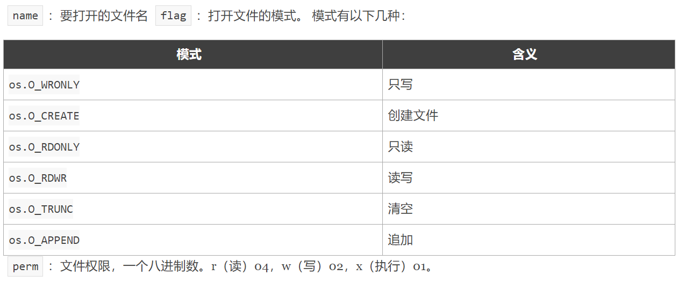
-
读取文件
- io：io.ReadFULL()
- os：fileObj.Read()
- bufio：bufio.NewReader()
- inutil：ioutil.ReadFile()
-
写入文件
- io：io.WriteString()
- os：fileObj.Write()、fileObj.WriteString()
- bufio：bufio.NewWriter()
- ioutil：ioutil.WriteFile()
反射(reflect)
-
反射是指在程序运行期对程序本身进行访问、检测和修改它本身状态或行为的一种能力。Go语言提供反射机制：编译时并不知道变量的具体类型，但在运行时更新变量和检查它们的值、调用它们的方法。（
reflect包） -
reflect.TypeOf()函数返回值为reflect.Type类型，获得任意原始变量的类型信息。t := reflect.TypeOf(x)t.Name()——类型名；反射中像数组、切片、Map、指针等类型的变量， t.Name() 返回值为空字符串("")。t.Kind()——类型种类
-
reflect.ValueOf()返回值为reflect.Value类型，获得任意原始变量的值信息。
IsNil()报告 v 持有的值是否为 nil。v 持有的值的分类必须是通道、函数、接口、映射、指针、切片之一；否则IsNil()函数会导致panic。IsValid()返回 v 是否持有一个值。如果 v 是无效值会返回 false，此时 v 除了IsValid、String、Kind之外的方法都会导致panic。
-
反射中使用专有的
Elem()方法来获取指针变量对应值的信息。——原始变量为指针变量，t.Elem()、v.Elem()可以获取指针指向的值的类型信息和值信息。- 必须传递变量地址（指针）给反射类型，才能利用反射修改变量值。
-
结构体反射
StructField类型：描述结构体中的一个字段的信息。

- 结构体类型变量反射的
Type类型变量可以通过相应方法获得结构体的详细信息。

-
reflect.DeepEqual()：func DeepEqual(a1, a2 interface{}) bool- 判断两个值是否深度一致。不同类型、array、slice、map、结构体都可以使用。空切片和nil切片不相等，函数类型只有都为nil时返回true。
-
不要滥用反射
- 基于反射的代码是极其脆弱的，反射中的类型错误会在真正运行的时候才会引发panic。
- 大量使用反射的代码可读性差。
- 反射的性能低下，涉及到内存分配以及后续的垃圾回收，反射的实现用到大量枚举和for循环。
并发编程
-
并发和并行
- 并发（Concurrent）：在操作系统中，是指一个时间段中有几个程序都处于已启动运行到运行完毕之间，且这几个程序之间是互相抢占资源的，都是在同一个处理机上运行。
- 并行（Parallel）：当系统有多个CPU时，当一个CPU执行一个进程时，另一个CPU可以执行另一个进程，多个进程互不抢占CPU资源，可以同时进行。
-
进程、线程、协程
- 进程：操作系统会以进程为独立的运行单位，分配和调度系统资源（CPU时间片、内存等资源），进程是资源分配和调度的基本单位。
- 线程：被称为轻量级进程(Lightweight Process，LWP），线程是一个CPU调度的基本单元，也是程序执行流的最小单元。（2MB）
- 协程：一种用户态的轻量级线程(微线程)，协程的调度完全由用户程序控制。
- 优点：协程的资源消耗小、切换开销小：程序级别的切换，操作系统完全感知不到。（动态伸缩：2KB--1GB）；单线程内就可以实现并发的效果，最大限度地利用cpu。
- 缺点：必须自己承担调度的责任；协程本质上是一个单线程，失去了标准线程使用多CPU的能力；一旦协程出现阻塞，将会阻塞整个线程。
-
goroutine：Go语言在语言层面天生支持并发，通过goroutine( Go协程 )实现，goroutine是由Go运行时( Go runtime )调度和管理的。
- 启动goroutine：在调用函数（普通、匿名函数或方法）的时候在前面加上
go关键字，就可以为一个函数创建一个goroutine。一个goroutine必定对应一个函数或方法，可以创建多个goroutine去执行相同的函数或方法。 GMP调度模型：Go语言运行时(runtime)层面的实现，是Go语言并发编程的调度系统。——G、P、M为对应概念的数据结构抽象- G(goroutine协程)——G可抢占策略：LRQ中的G可以相互抢占，时间片最大10ms。
- P(processor处理器,调度器)——P数量：
runtime.GOMAXPROCS()设置当前程序并发时占用的CPU逻辑核心数(最大256)，默认值是机器上的CPU逻辑核心数。runtime.NumCPU()：机器上的CPU逻辑核心总数。 - M(machine,OS线程)——M数量：动态的，有M阻塞会创建，有M空闲会回收或睡眠。
SetMaxThreads()设置(最大10000)。 - G:M是M:N关系，由P负责调度G到M执行，G对M不可见。
- P本地队列(LRQ)：每个P都有的本地队列，优先存放待执行的G。(Cap:256)
- 全局队列(GRQ)：当P对应的LRQ满了，待执行的G存放进全局队列。
- work stealing 机制：某个P的LRQ空无可用G时，优先去其他P的LRQ偷批量G，最后去GRQ(GRQ有锁)。
- hand off 机制：G在M上阻塞时，P和M分离，创建、唤醒新M。
- 自旋线程：被唤醒时M运行G0，且对应P本地队列为空，不断寻找G。自旋状态优先从全局队列获取批量G，全局空则work stealing。
go func()流程：

- 启动周期M0&G0：

sync.WaitGroup：实现多goroutine间的同步。（var wg sync.WaitGroup、wg.Add(1)、wg.Done()、wg.Wait()）
- 启动goroutine：在调用函数（普通、匿名函数或方法）的时候在前面加上
-
channel：可以让一个goroutine发送特定值到另一个goroutine的通信机制。
- Go语言提供channel在多个goroutine间进行通信。goroutine和channel是 Go 语言秉承的 CSP（Communicating Sequential Process）并发模式的重要实现基础。
- Go语言中的通道(channel)是一种特殊的类型(引用类型)。通道像一个队列，遵循先入先出(First In First Out)的规则，保证收发数据的顺序。每一个通道都是一个具体类型的导管，也就是声明 channel 的时候需要为其指定元素类型。
- 声明：
var ch chan T——未初始化时为 nil。 - 通道需要使用
make()函数初始化才能使用：ch = make(chan T, [缓冲大小])——可用len()、cap()
- 声明：
- channel 操作(
<-符号 ) ：- send：将一个值发送到通道中。
ch <- 10 - receive：从一个通道中接受值。
x := <-ch、x, ok := <-ch - close：调用内置的
close()函数来关闭通道，通道是可以被GC机制回收的，关闭操作不必须。close(ch) 
- 关闭的通道可以接收值，直到取空，关闭的空通道执行接收操作x为对应类型的零值，ok为false。
- 关闭的通道再发送值就会导致panic。
- 关闭一个已经关闭的通道会导致panic。
- send：将一个值发送到通道中。
- 无缓冲通道进行通信将导致发送和接收的goroutine同步化。因此，无缓冲通道也被称为同步通道。 ——不能只在同一goroutine内使用
- 缓冲的channel保证在取的时候里面肯定有数据， 否则就因取不到而阻塞
- 非缓冲的channel保证再放的时候肯定有另外的goroutine在取，否则就因放不进去而阻塞
- 通道循环取值：
for v := range ch、for {...}//利用ok判断break——循环通道必须有close()操作或判断跳出循环的标志。 - 单向通道：只写(
chan<- T)、只读(<-chan T)——多用于函数参数或返回值。函数传参及任何赋值操作中可以将双向通道转换为单向通道，但单项通道无法转换成双向通道。 - 底层原理

-
select{}关键字：多路复用，可以同时响应多个通道的操作。- 类似于
switch语句，有一系列case分支和一个default分支。 - 每个
case会对应一个通道的通信（接收或发送）过程。 - 如果多个case同时满足，select会随机选择一个。
- select会一直等待，直到某个case的通信操作完成时，就会执行case分支对应的语句。没有case的
select{}会一直等待，可用于阻塞main()函数；只有一个case的select用于阻塞的接收/发送操作；select嵌套可实现优先级队列。 for-select陷阱：select 中 break 作用于当前语句块，不对外层 for 循环起作用，循环中其他剩余语句仍然执行；continue 只能作用于外层 for 循环，无法单独在 select 中使用，循环中其他剩余语句不会执行，直接进入下一次循环；return 当前函数直接返回，for-select及后序代码都不执行。
- 类似于
-
worker pool：生产者消费者模型。producer --> channel（缓冲区） --> consumer（限定goroutine数量）

单元测试
-
go test 工具：一个按照一定约定和组织的测试代码的驱动程序。在包目录内，所有以
_test.go为后缀名的源代码文件都是go test测试的一部分，不会被go build编译到最终的可执行文件中。 -
单元测试函数：必须导入
testing包。（func TestName(t *testing.T) {}）——t.Errorf()抛出错误- go test命令行参数
-v：查看各单元测试函数名称，结果和运行时间。 - go test命令行参数
-run：只执行被正则表达式匹配的测试函数。还可以通过/来指定子测试。 - go test命令行参数
-cover：查看测试覆盖率。-coverprofile=c.out参数将覆盖率信息输出到一个文件c.out，使用go tool cover -html=c.out生成HTML报告。 - 测试组：多组测试数据使用slice储存，for range 循环测试。
- 子测试：多组测试数据使用map储存，for range 循环内使用
t.Run(key, func(t *testing.T){} )对每个元素进行子测试。
- go test命令行参数
-
基准测试函数：用循环结构执行b.N次。（
func BenchmarkName(b *testing.B) {}）——最少执行1s- 基准测试默认不执行，需要go test命令行参数
-bench=Name指定函数进行基准测试。 - go test命令行为基准测试添加
-benchmem参数，来获得内存分配的统计数据。 b.ResetTimer()：重置计时器，之前的处理不会放到执行时间里。func (b *B) RunParallel(body func(*PB))：以并行的方式执行给定的基准测试。b.SetParallelism(n)：设置使用的CPU数，还可以命令行添加-cpu参数，如go test -bench=. -cpu 2来指定使用的CPU数。- 性能比较函数：测试函数的性能与输入n的规模有关，针对不同规模的n分别进行基准测试，进行比较。
- 基准测试默认不执行，需要go test命令行参数
func benchmark(b *testing.B, size int){/* ... */}
func Benchmark10(b *testing.B){ benchmark(b, 10) }
func Benchmark100(b *testing.B){ benchmark(b, 100) }
func Benchmark1000(b *testing.B){ benchmark(b, 1000) }
-
Setup与TearDown：测试程序有时需要在测试之前进行额外的设置(setup)或在测试之后进行拆卸(teardown)。
func TestMain(m *testing.M) {...} -
示例函数：无参数无返回值。
func ExampleName() {...}——用于生成文档。 -
pprof 性能调优
- runtime/pprof：采集工具型应用运行数据进行分析。
- net/http/pprof：采集服务型应用运行时数据进行分析。
- go test -bench . -cpuprofile=cpu.prof
- go test -bench . -memprofile=mem.prof ——生成pprof文件
- go tool pprof cpu.prof/mem.prof —— 分析pprof文件
Go语言标准库
fmt
-
fmt包实现了类似C语言printf和scanf的格式化I/O。格式化动作（'verb'）源自C语言但更简单。
-
Printing
func Printf(format string, a ...interface{}) (n int, err error)：Printf根据format参数生成格式化的字符串并写入标准输出。返回写入的字节数和遇到的任何错误。（Print、Println）func Fprintf(w io.Writer, format string, a ...interface{}) (n int, err error)：Fprintf根据format参数生成格式化的字符串并写入w。返回写入的字节数和遇到的任何错误。（Fprint、Fprintln）func Sprintf(format string, a ...interface{}) string：Sprintf根据format参数生成格式化的字符串并返回该字符串。（Sprint、Sprintln）func Errorf(format string, a ...interface{}) error：Errorf根据format参数生成格式化字符串并返回一个包含该字符串的错误。
-
Scanning
func Scanf(format string, a ...interface{}) (n int, err error)：Scanf从标准输入扫描文本，根据format 参数指定的格式将成功读取的空白分隔的值保存进成功传递给本函数的参数。返回成功扫描的条目个数和遇到的任何错误。（Scan、Scanln）func Fscanf(r io.Reader, format string, a ...interface{}) (n int, err error)：Fscanf从r扫描文本，根据format 参数指定的格式将成功读取的空白分隔的值保存进成功传递给本函数的参数。返回成功扫描的条目个数和遇到的任何错误。（Fscan、Fscanln）func Sscanf(str string, format string, a ...interface{}) (n int, err error)：Sscanf从字符串str扫描文本，根据format 参数指定的格式将成功读取的空白分隔的值保存进成功传递给本函数的参数。返回成功扫描的条目个数和遇到的任何错误。（Sscan、Sscanln）
time
-
time包提供了时间的显示和测量用的函数。日历的计算采用的是公历。
-
type Time：Time代表一个纳秒精度的时间点。
func Now() Time：Now返回当前本地时间。func (t Time) Date() (year int, month Month, day int)、func (t Time) Clock() (hour, min, sec int)：返回时间点t对应的Year()、Month()、Day()；返回t对应的那一天的Hour()、Minute()、Second()。（YearDay()、WeekDay()）func (t Time) Equal(u Time) bool：判断两个时间是否相同，会考虑时区的影响，因此不同时区标准的时间也可以正确比较。本方法和用t==u不同，这种方法还会比较地点和时区信息。func (t Time) Before(u Time) bool、func (t Time) After(u Time) bool：判断时间点t在时间点u之前、之后。func (t Time) Add(d Duration) Time、func (t Time) Sub(u Time) Duration：t+u；t-u。——返回值为时间间隔类型(time.Duration)- 时间戳：自1970年1月1日（08:00:00GMT）至当前时间的总时间。它也被称为Unix时间戳（UnixTimestamp）。（
func (t Time) Unix() int64、func (t Time) UnixNano() int64、func Unix(sec int64, nsec int64) Time //根据时间戳返回时间类型）
-
时间格式化（
2006-01-02-15-04-05.000 Mon Jan MST -0700------Y-m-d-H-m-s Weekday Month 时区;15、03对应24h制、12h制）func (t Time) Format(layout string) stringfunc ParseInLocation(layout, value string, loc *Location) (Time, error)、func Parse(layout, value string) (Time, error)
-
Ticker：定时器，一个通道，并每隔一段时间向其传递"tick"。（
func Tick(d Duration) <-chan Time）
strconv
-
Go语言中strconv包实现了基本数据类型和其字符串表示的相互转换。
-
string与int类型转换
- Atoi()：
func Atoi(s string) (i int, err error) - Itoa()：
func Itoa(i int) string
- Atoi()：
-
Parse类函数用于转换字符串为给定类型的值
- ParseBool()：
func ParseBool(str string) (value bool, err error) - ParseInt()：
func ParseInt(s string, base int, bitSize int) (i int64, err error) - ParseUnit()：
func ParseUint(s string, base int, bitSize int) (n uint64, err error) - ParseFloat()：
func ParseFloat(s string, bitSize int) (f float64, err error)
- ParseBool()：
-
Format系列函数实现了将给定类型数据格式化为string类型数据的功能。
- FormatBool()：
func FormatBool(b bool) string - FormatInt()：
func FormatInt(i int64, base int) string - FormatUint()：
func FormatUint(i uint64, base int) string - FormatFloat()：
func FormatFloat(f float64, fmt byte, prec, bitSize int) string
- FormatBool()：
sync
底层是结构体（值类型），作为函数参数时需要传入指针
-
sync.WaitGroup：实现多goroutine间的同步。（
var wg sync.WaitGroup、Add()wg.Add(1)、Done()wg.Done()、Wait()wg.Wait()） -
sync.Once：只执行一次动作的对象，只有一个Do方法，实现单例模式。（ Do()
func (o *Once) Do(f func())——参数为func()类型函数，可以使用闭包实现） -
sync.Mutex：互斥锁，防止出现竞态问题——悲观锁。Lock()
func (m *Mutex) Lock()、Unlock()func (m *Mutex) Unlock() -
sync.RWMutex：读写互斥锁，适合读多写少的场景。
- Lock()
func (rw *RWMutex) Lock()：Lock方法将rw锁定为写入状态，禁止其他线程读取或者写入。 - Unlock()
func (rw *RWMutex) Unlock()：Unlock方法解除rw的写入锁状态，如果m未加写入锁会导致运行时错误。 - RLock()
func (rw *RWMutex) RLock()：RLock方法将rw锁定为读取状态，禁止其他线程写入，但不禁止读取。——可有多个读锁，内部有计数器。 - RUnlock()
func (rw *RWMutex) RUnlock()：Runlock方法解除rw的读取锁状态，如果m未加读取锁会导致运行时错误。
- Lock()
-
sync.Map：类似于Go
map [interface {}] interface {}，但是可以安全地被多个goroutine并发使用，而无需额外的锁定或协调。——勿需make()初始化（m := sync.Map{}、var m sync.Map）- Store()
func (m *Map) Store(key, value interface{})：设置sync.Map对象的键值对。 - Load()
func (m *Map) Load(key interface{}) (value interface{}, ok bool)：返回键中存储在Map中的值；如果不存在任何值，则返回nil。ok表示是否在映射中找到值。 - Delete()
func (m *Map) Delete(key interface{})：删除key对应的键值对。 - Range()
func (m *Map) Range(f func(key, value interface{}) bool)：接收的参数为特定类型的回调函数，范围依次调用Map中存在的每个键和值。如果f返回false，则range停止迭代。——不需要与for循环配合遍历。 - LoadOrStore()
func (m *Map) LoadOrStore(key, value interface{}) (actual interface{}, loaded bool)：返回key对应的value值（如果存在），key不存在将存储并返回给定的value。如果加载，则loaded返回为true；如果存储，则为false。 - LoadAndDelete()
func (m *Map) LoadAndDelete(key interface{}) (value interface{}, loaded bool)：删除key对应的value，如果有则返回这个值，否则返回nil。loaded表示key是否存在。
- Store()
-
sync/atomic：原子操作。

flag
log
context
net


-
TCP
- type TCPListener
- func ListenTCP(network string, laddr *TCPAddr) (*TCPListener, error)
- func (l *TCPListener) AcceptTCP() (*TCPConn, error)
- func (l *TCPListener) Close() error
- type TCPConn
- func DialTCP(network string, laddr, raddr *TCPAddr) (*TCPConn, error)
- func (c *TCPConn) Close() error
- func (c *TCPConn) Read(b []byte) (int, error)
- func (c *TCPConn) Write(b []byte) (int, error)
- type TCPListener
-
UDP
- type UDPConn
- func ListenUDP(network string, laddr *UDPAddr) (*UDPConn, error)
- func DialUDP(network string, laddr, raddr *UDPAddr) (*UDPConn, error)
- func (c *UDPConn) Close() error
- func (c *UDPConn) ReadFromUDP(b []byte) (int, *UDPAddr, error)
- func (c *UDPConn) WriteToUDP(b []byte, addr *UDPAddr) (int, error)
- func (c *UDPConn) Read(b []byte) (int, error)
- func (c *UDPConn) Write(b []byte) (int, error)
- type UDPConn
-
net\http：HTTP